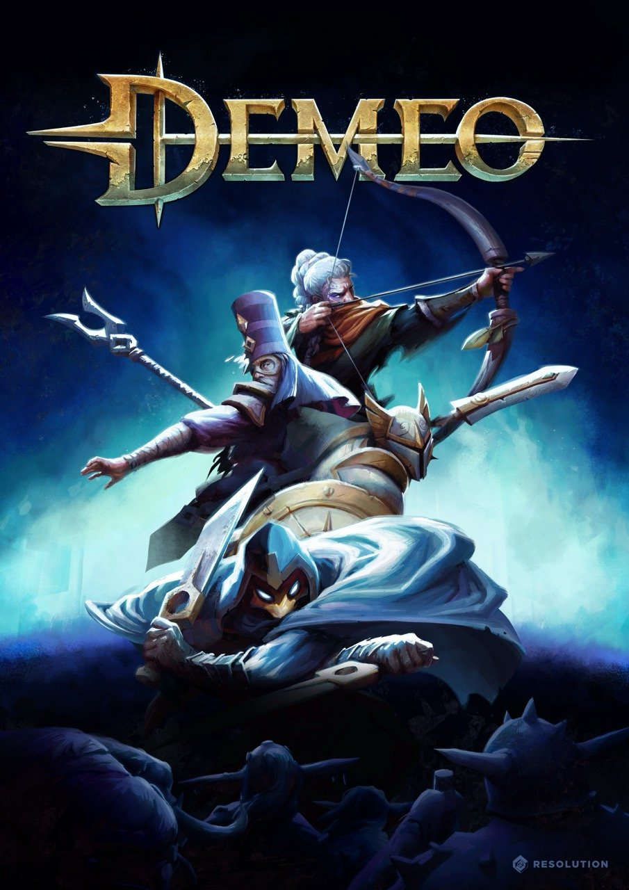
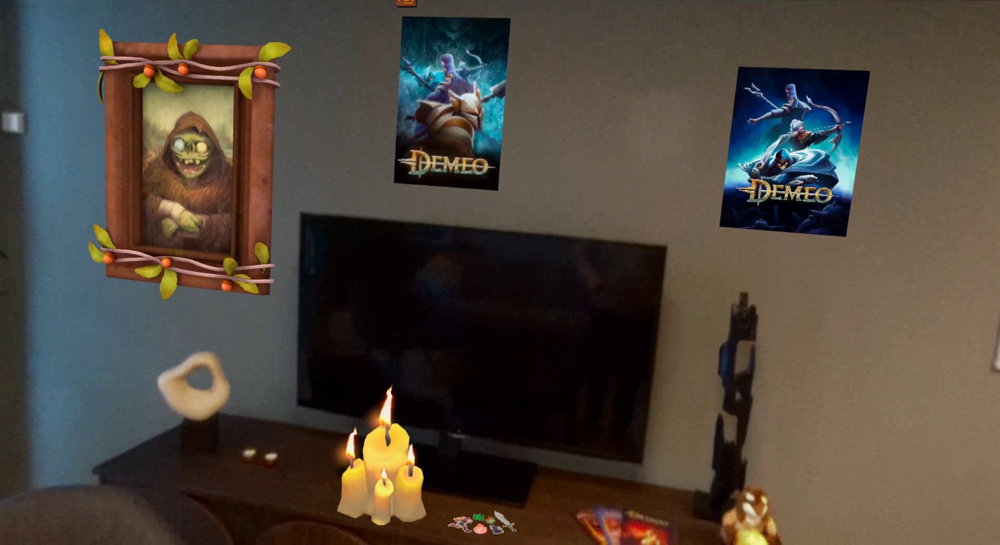
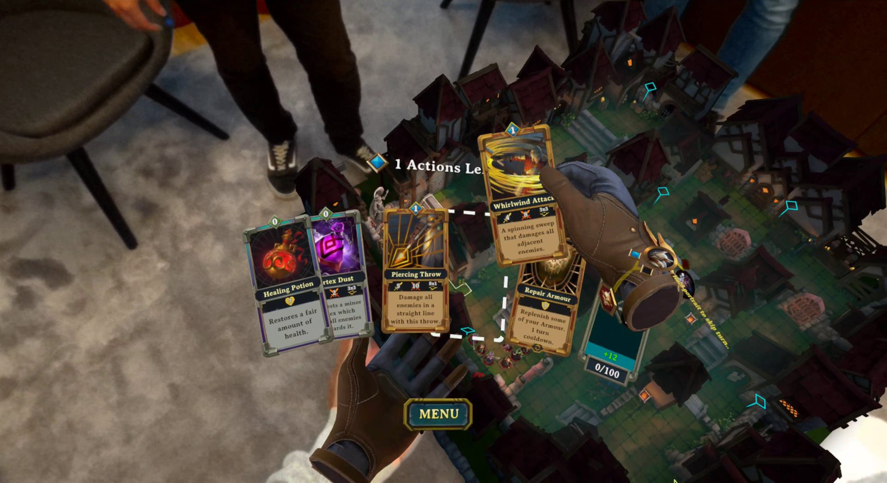

Game Info
Demeo is a cross-platform cooperative adventure for up to four players that recreates all of the magic and camaraderie of gathering around a tabletop with friends to do battle against the forces of evil.
Platforms
Virtual Reality
TODO: tagline
TODO: describe what you built and why.
Platforms
Mixed Reality
TODO: tagline

TODO: describe what you built and why.
Platforms
PlayStation 5
Ready for launch day
I joined a small team porting Demeo to PlayStation 5 and PlayStation VR2, where it shipped as a launch title for the headset.
My work included the PlayStation Activities integration, PlayStation Plus handling, and audio-based rumble for the PS VR2 Sense controllers, which also made use of their adaptive triggers.
Features
Hand Tracking
Hands-on, from tutorial to endgame

I started out working on hand tracking alongside the feature's original author, and took over responsibility for it after its initial release.
Since then I have added hand tracking support to the tutorial, made accessibility features such as tilt work with hand tracking, and reworked the behaviour of several UI elements so they feel better to use with your hands.
Features
Spatial Anchors
TODO: tagline
TODO: describe what you built and why.
Features
Auto Saves
Pick up where you left off
When I joined the project, Demeo could only save between levels, and at its initial release it had no saving at all.
Together with another developer I built a mid-level save system for singleplayer, then continued on my own to bring it to multiplayer. It was a highly requested feature among players.
The game now saves automatically after every turn-based action, so players can leave at any time and continue later. The system later carried over to Demeo x Dungeons & Dragons: Battlemarked, where my original co-developer improved it further.
Features
Accessibility
Tilt the table, not the controls
Tilt is a VR feature that reduces neck strain, since the gameplay takes place on a game board below you. It lets players tilt their avatar, with an animated motion, so the board appears to lean towards them.
Improving it was my first task on Demeo. Rotating while tilted didn't work as expected: past around 90° rotating left started turning you right and vice versa, until the controls were fully reversed at the maximum tilt of 180°. After some thought and experimentation I fixed it with a single line of vector multiplication, code that has since been reused in Demeo Battles and Demeo x Dungeons & Dragons: Battlemarked.
Tilting originally hid the environment, so I later added an option to keep it visible, anchored to the player's avatar.